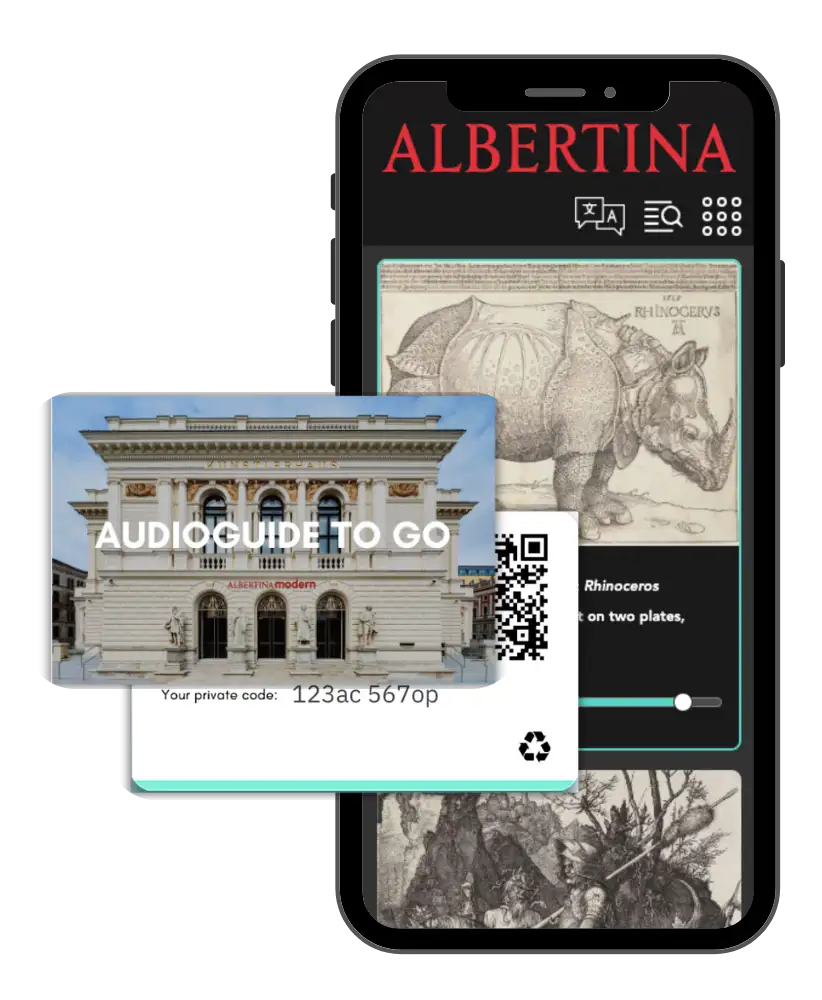
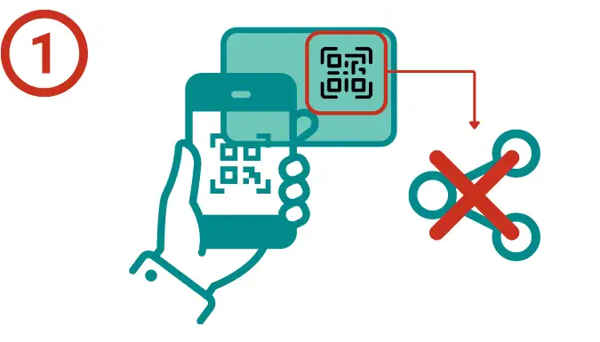
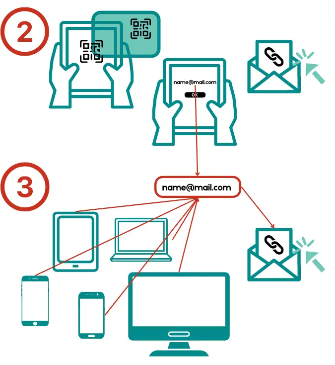
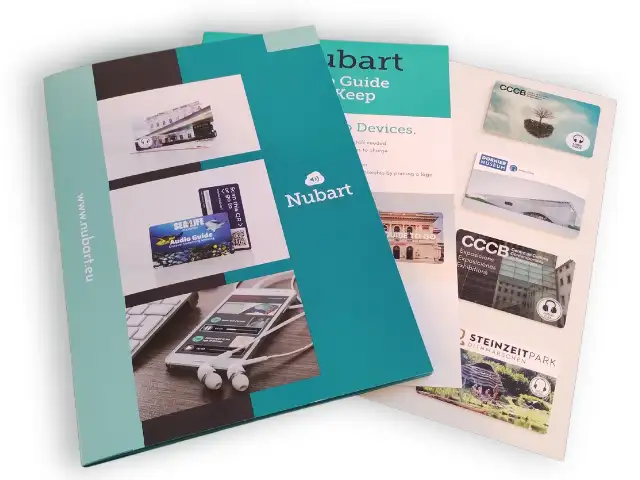
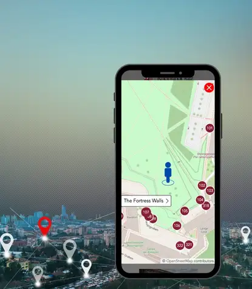
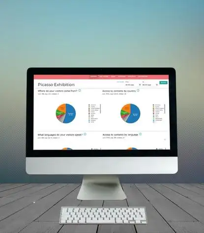
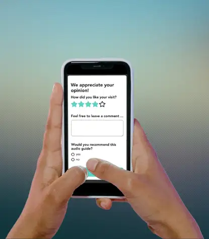

Hai bisogno di produrre contenuti per la tua audioguida?
Perché Nubart?
Perché i dispositivi audio-guida richiedono una logistica molto complessa e generano rifiuti elettronici.
E perché le app di audioguida sono difficili da monetizzare e solo il 2% circa dei visitatori le scarica.
Più facile di così non si può
Perché un dispositivo di audioguida quando tutti hanno uno smartphone?
Facile da usare
Basta scansionare il QR per accedere ai contenuti. Grazie alla nostra innovativa interfaccia a scorrimento, trovare i punti di interesse è facile e intuitivo anche per un pubblico non digitalizzato.
Monetizzabile
A differenza delle app, le nostre cards non sono trasferibili e quindi hanno un valore commerciale. Potete venderle e generare reddito.
Adatta alla sponsorizzazione
A differenza dei dispositivi o delle applicazioni, consente di stampare sulla carta il logo di uno o più sponsor.

Modulo per le visite guidate
Opzionalmente, è possibile incorporare un modulo con un sistema digitale di guida di gruppo. Non è quindi necessario acquistare costose radioguide.
Alto tasso di utilizzo
Le nostre carte raggiungono un tasso di utilizzo del 10-20% se vendute separatamente e del 45-85% se incluse nel biglietto.
Modalità offline
Scarsa connettività? Le audioguide di nubart offrono un'innovativa modalità offline. Dopo aver scansionato il codice QR per la prima volta in un luogo dotato di connessione internet, il visitatore può accedere all'audioguida completa in qualsiasi momento come se stesse utilizzando un'app. Può anche scansionare nuovamente il QR in aree prive di connettività.
Ecologico
I dispositivi generano rifiuti elettronici dannosi. Le audioguide Nubart sono stampate su cartone FSC ultracompatto con compensazione di CO2.
Solo l'audio? O un'audioguida multimediale completa?
Video, cursori, struttura modulare, modalità offline, file scaricabili, controllo remoto dell'audioguida, possibilità di caricare file o lasciare messaggi vocali...
Tutto questo e molto altro può essere integrato in un'audioguida Nubart.
Monetizza le tue audioguide
.Come possiamo rendere i codici QR delle nostre audioguide non trasferibili?
Un'audioguida è un importante servizio aggiuntivo per il tuo museo. Tuttavia, l'esperienza dimostra che solo il 15-30% dei visitatori vorrà usufruire di questo servizio. Produrre un'audioguida è costoso e potresti voler recuperare una parte dei costi e non lasciare questa spesa ai contribuenti. Potresti anche considerare le audioguide come una fonte di guadagno per nuovi progetti.
Se fornisci lo stesso codice QR a tutti i visitatori, non potrai monetizzare l'audioguida, poiché questi link sono pubblici e possono essere condivisi.
In Nubart abbiamo brevettato un sistema chiamato Lightweight Web Access Control. Questo ci permette di identificare in modo anonimo il dispositivo dell'utente. Il legittimo proprietario del codice dell'audioguida potrà accedere al contenuto in qualsiasi momento, ma non potrà condividerlo con altri. Questo aggiunge valore ai tuoi contenuti, indipendentemente dal fatto che tu voglia vendere le schede separatamente o includerle nel prezzo del biglietto.
Anche se i codici QR delle carte Nubart non sono trasferibili, i legittimi proprietari possono riutilizzarli in qualsiasi momento. Questo è importante, perché la possibilità di riutilizzare l'audioguida è un punto di forza per i visitatori e aumenta il tasso di utilizzo.
Se desideri rinunciare alle cards, possiamo fornirti i link o i QR online attraverso la nostra API. In questo modo potrai integrarli nel tuo sistema di biglietteria.
Come funziona
I nostri codici QR non sono trasferibili...

-
Non transferibili: . Il primo dispositivo può accedere direttamente all'audioguida scansionando il codice QR.
Il codice QR è unico e non può essere condiviso pubblicamente.
La maggior parte dei visitatori non va oltre.
...ma riutilizzabili
- Riutilizzabili: Il contenuto può essere consultato nuovamente da un secondo dispositivo. Questo richiede un link di accesso via e-mail. Una volta cliccato il link, i diritti di accesso vengono trasferiti al secondo dispositivo. Il link non può essere condiviso.
- I visitatori in possesso della carta possono continuare ad accedere ai contenuti tutte le volte che vogliono da qualsiasi altro dispositivo. Il link di accesso sarà sempre inviato all'indirizzo e-mail precedentemente fornito. Questo indirizzo e-mail non può essere modificato.
Richiedi una cartella con i campioni delle schede audio-guida di Nubart
Vuoi provare le nostre card gratuitamente?

Compila questo modulo e te li invieremo per posta:
Funzioni di geolocalizzazione delle audioguide Nubart
Avete bisogno di mostrare la via ai visitatori?
Geo-scrolling, mappe interattive con la posizione del visitatore, sovrapposizione di mappe per gli interni...
Il nostro pacchetto di geolocalizzazione copre tutte le esigenze di navigazione dei tuoi visitatori.
I visitatori possono aprire una mappa interattiva con tutti i punti di interesse. La mappa mostra la posizione del visitatore.
Ogni punto di interesse geolocalizzato ha un pulsante "mostra la mia posizione sulla mappa".
Negli spazi esterni, le nostre tracce sonore si illuminano e scorrono automaticamente in cima allo schermo del telefono quando il visitatore si avvicina all'oggetto in mostra o al luogo. Su Android questo processo è accompagnato da una leggera vibrazione del cellulare.
Possiamo sovrapporre la planimetria dei tuoi locali alla mappa per facilitare la navigazione negli spazi interni.
Vedere le mappe interattive di Nubart in azione

Le schede Nubart sono uno strumento di ricerca del pubblico.
Vuoi conoscere meglio il tuo pubblico?

Raccogli i dati dei visitatori senza essere invadente
I dati affidabili sull'esperienza dei visitatori, sebbene essenziali, sono spesso difficili da ottenere. Le schede Nubart sono uno strumento eccellente per raccogliere questi dati.
Nubart raccoglie i dati di utilizzo dei telefoni cellulari dei vostri visitatori, ma sempre in forma anonima, legale e senza violare la loro privacy.
Come cliente Nubart riceverete in qualsiasi momento un rapporto statistico sull'utilizzo delle vostre audioguide. I nostri rapporti gratuiti contengono, tra l'altro, i seguenti dati:
- Paese di origine del visitatore
- Lingua madre dei visitatori
- Numero di utenti al giorno
- Utenti per ora del giorno
- Durata del soggiorno del visitatore nel vostro museo o mostra
- Classifica delle tracce più ascoltate...
Nubart integra il modulo di feedback per l'analisi statistica
Lascia che i tuoi visitatori ti dicano cosa pensano
Sondaggio d'opinione direttamente nell'audioguida
I nostri rapporti sui dati raccolgono molte informazioni anonime sui vostri visitatori e sul loro comportamento ma alcune informazioni rilevanti non possono essere ottenute automaticamente, dovranno essere richieste.
Ecco perché, dopo l'ultima traccia audioguida, offriamo al visitatore un breve questionario con cinque domande. Due di loro sono standard:
- Valutazione generale della mostra da 1 a 5.
- Campo di testo libero per commentare la mostra o l'audioguida.
Opzionalmente, possiamo invitare i visitatori che valutano positivamente la visita a valutare la vostra struttura su Google.
Potrete ricevere i commenti dei visitatori via e-mail in tempo reale.
Potrete selezionare tre domande aggiuntive da una lunga lista di opzioni. Grazie al nostro sistema di codice unico, il visitatore potrà rispondere al questionario solo una volta, garantendo così la qualità e l'immediatezza dei dati. Il nostro sistema cattura anche le risposte incomplete.

Nessun problema. Ti verrà assegnato un responsabile di produzione che organizzerà tutto per te. Abbiamo un'ampia selezione di sceneggiatori, traduttori e doppiatori.
Sei preoccupato per i costi? Non esserlo.
Abbiamo modelli di business estremamente convenienti
Nubart come prodotto
Devi semplicemente acquistare una quantità di schede personalizzate. Puoi anche commissionare a Nubart la produzione del contenuto. Le schede sono valide a tempo indeterminato e potranno essere distribuite fino ad esaurimento.
Audioguida senza costi ricorrenti!
Condivisione dei benefici
La tracciabilità delle nostre schede ci permette di sapere esattamente quante ne sono state utilizzate, così possiamo fatturarvi a intervalli regolari. Vi forniremo regolarmente nuove schede. Offriamo una fornitura continua di schede e possiamo ammortizzare la produzione di contenuti.
Guadagna senza anticipare i costi!
Abbonamento
Preferisci includere lo schema nel prezzo del biglietto? Ricevi le schede in anticipo e una fattura mensile solo per le schede che hai distribuito. Possiamo ammortizzare la produzione di contenuti. Il nostro tasso di utilizzo è enorme (45-85%).
Ottieni il servizio senza costi iniziali!